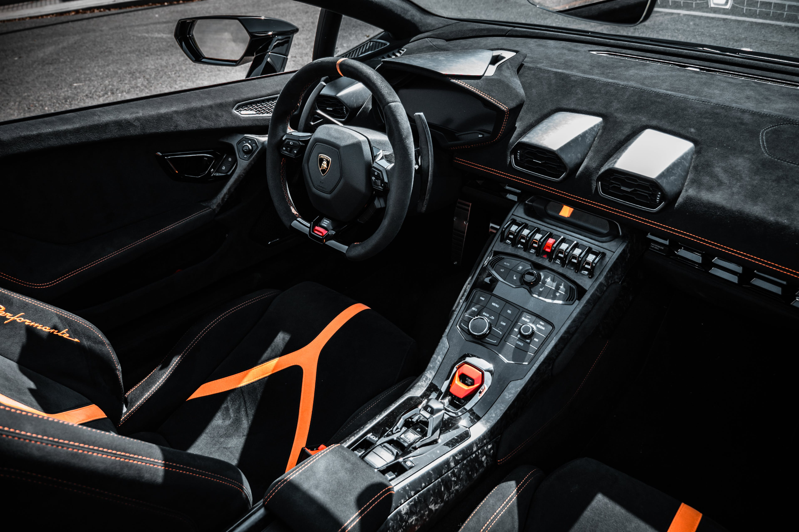
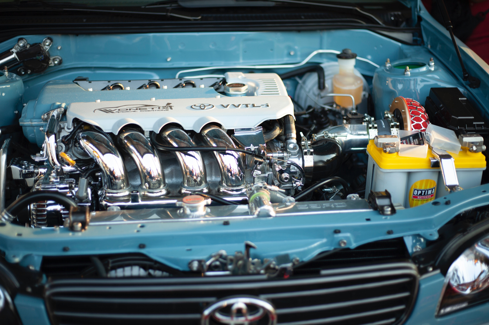
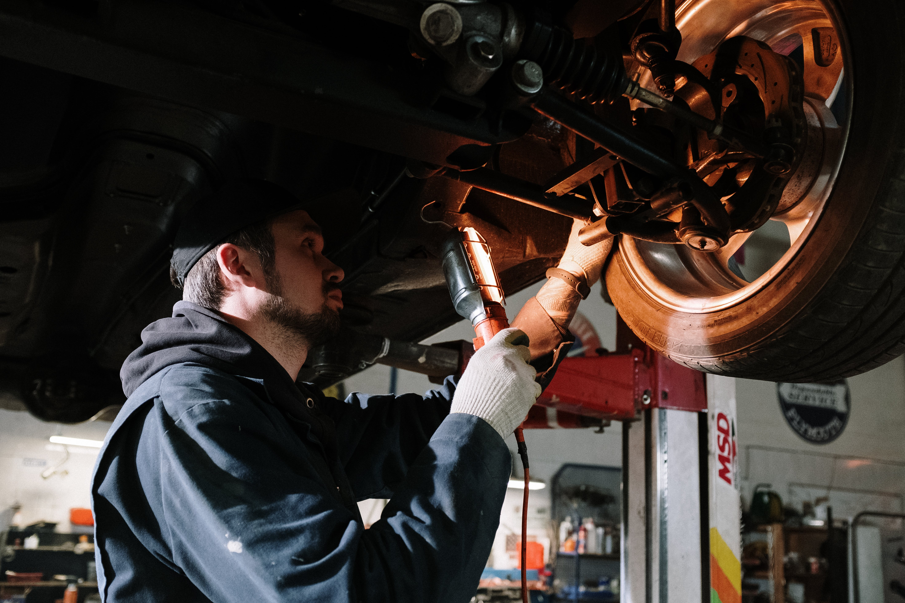

"Inspection Tools"
A. Pre-Purchase Inspection Checklist is a valuable tool for users looking to thoroughly evaluate the condition of a used car before making a purchase. Here's a suggested list of items to include in the checklist:
Pre-Purchase Inspection Checklist:

1. Exterior Inspection:
- Body condition (dents, scratches, rust)
- Paint quality
- Glass and windows (cracks or chips)
- Tires (tread depth, condition)
- Wheels and rims
- Lights (headlights, taillights, turn signals)
- Bumpers and trim

2. Under the Hood:
- Engine condition (leaks, unusual sounds)
- Fluid levels (oil, coolant, brake fluid)
- Battery condition
- Belts and hoses
- Radiator and cooling system
- Air filter
3. Interior Inspection:
- Seats and upholstery (tears, stains)
- Dashboard and instrument panel
- Controls and switches
- Carpet and flooring
- Odors (mold, smoke)
- Headliner
4. Vehicle History and Documentation:
- Review maintenance and service records
- Check the title status (clean title, salvage, etc.)
- Ensure the VIN matches the documents
- Verify the mileage
5. Test Drive:
- Engine performance (acceleration, idling)
- Steering and handling
- Braking system (brake feel, responsiveness)
- Transmission (smooth shifting)
- Suspension and shocks (ride quality)
- Noise and vibrations

6. Electrical and Electronics:
- Lights (interior and exterior)
- Climate control and air conditioning
- Audio and entertainment system
- Power windows and locks
- Wipers and washers

7. Undercarriage Inspection:
- Check for rust, corrosion, or damage to the undercarriage
- Exhaust system condition
- Suspension components (struts, shocks, control arms)

8. Fluid Analysis:
- Consider having the engine oil and transmission fluid analyzed for signs of contamination or wear.
9. Vehicle Identification Number (VIN) Check:
- Confirm that the VIN matches the documentation and conduct a history check if possible.

10. Professional Inspection:
- If unsure, consider having a professional mechanic or inspection service evaluate the car's condition.

11. Negotiation:
- Use the findings from the inspection to negotiate with the seller, either for a reduced price or necessary repairs.

12. Ongoing Maintenance Considerations:
- Estimate potential maintenance or repair costs and factor them into your budget.
This checklist is designed to help users conduct a comprehensive evaluation of a used car's condition and history.